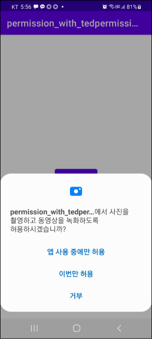

buttonOpenCamera.setOnClickListener { TedPermission.with(this) // 요청할 권한 나열하기 .setPermissions(Manifest.permission.CAMERA) // 권한 요청 결과에 대한 리스너 등록 .setPermissionListener(object: PermissionListener { // 권한을 승인했을 경우 overridefunonPermissionGranted() { // 카메라 열기 openCamera() }
// 권한을 승인하지 않았을 경우 overridefun 역(deniedPermissions: ArrayList<String>?) { // 앱 종료 finish() } }) // 권한을 거부할 경우 나타나는 Alert dialog의 메시지 .setDeniedMessage("If you reject permission, you can not use this service. \n\nPlease turn on permissions at [Setting] > [Permission]") // 권한 요청하기 .check() } }
privatefunopenCamera() { var intent = Intent(MediaStore.ACTION_IMAGE_CAPTURE) startActivity(intent) } }
이제 앱을 실행하고 버튼을 누르면 다음과 같이 권한 설정 대화상자가 나옵니다. 
앱 사용 중에만 허용을 누르면 onPermissionGranted()메소드가 호출되며, 앱을 종료하고 다시 시작해도 권한 설정 대화상자가 나오지 않습니다. 이번만 허용을 눌러도 onPermissionGranted() 메소드가 호출됩니다. 차이점은 앱 종료 후 다시 시작할 때마다 권한 설정 대화상자가 다시 나오느냐 입니다.
만약 거부를 누르면 setDeniedMessage()메소드에서 설정한 메시지와 함께 설정 또는 닫기를 선택할 수 있는 대화상자가 나옵니다.
여기서도 닫기를 누르면 onPermissionDenied()가 호출됩니다. 만약 설정을 누르면 다음과 같이 앱 설정 화면으로 이동합니다.
여기서 권한을 모두 부여하고 뒤로가기를 누르면 onPermissionGranted()이 호출됩니다. 그러나 하나라도 권한을 부여하지 않으면 onPermissionDenied()이 호출됩니다.
다중 권한 요청
여러 권한이 필요할 때 다음과 같이 동시에 요청할 수도 있습니다.
1 2 3 4 5 6 7 8 9 10 11 12 13
TedPermission.with(this) // 권한 여러개 설정 .setPermissions(Manifest.permission.CAMERA, Manifest.permission.READ_CALENDAR) .setPermissionListener(object: PermissionListener { overridefunonPermissionGranted() { // ... } overridefun 역(deniedPermissions: ArrayList<String>?) { // ... } }) .setDeniedMessage("If you reject permission, you can not use this service. \n\nPlease turn on permissions at [Setting] > [Permission]") .check()